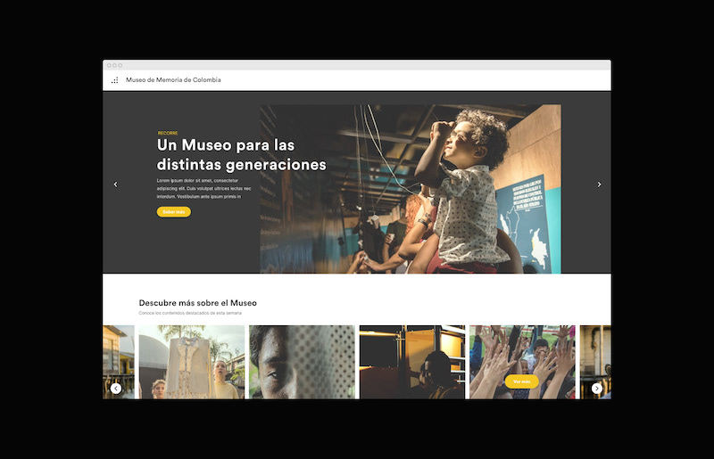
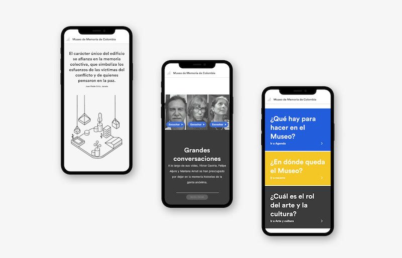
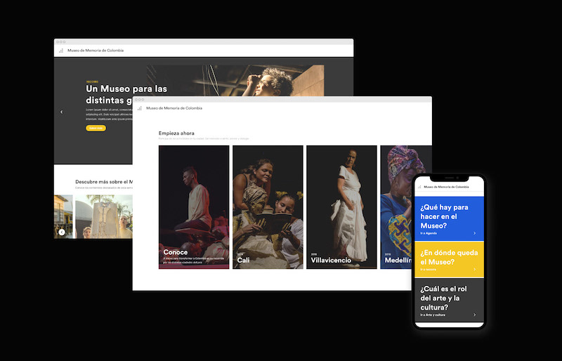

Website for the Museum of Memory of Colombia, whose objective is to strengthen the collective memory of the events that took place in the recent history of violence in Colombia.
Visit the Museum → museodememoria.gov.co
Role: Interface Design, Front-end Development
Technologies: WordPress, HTML, CSS, JavaScript


